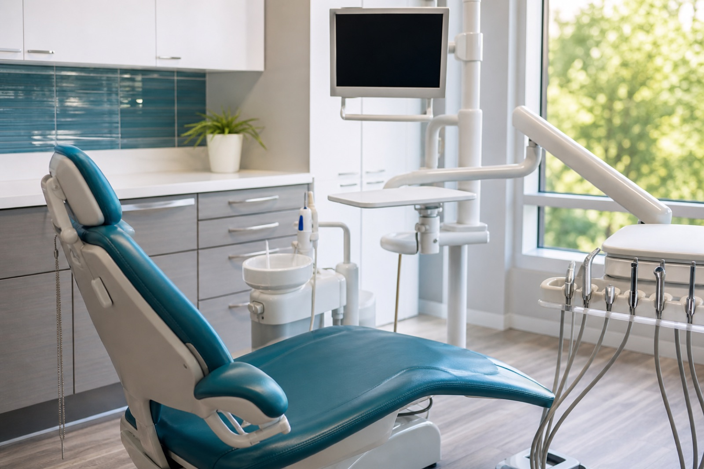

Via Augusta 5

ODONTOLOGÍA FAMILIAR
Una primera visita para entender, explicar y planificar.
La claridad del diagnóstico y del plan ayuda a tomar decisiones con tranquilidad, tanto en prevención como en tratamientos más complejos.
Diagnóstico inicial
Primera visita diagnóstica gratuita según la información pública de la clínica.
Plan personalizado
Alternativas y próximos pasos explicados antes de comenzar.
Cuidado para la familia
Prevención, odontopediatría, ortodoncia, estética e implantología.
¿Puedo elegir centro?
Sí. La solicitud permite indicar Salou o Vila-seca.
Salou
Via Augusta 5 · 977 911 575 · L-V 9-20
Vila-seca
C. de les Eres Altes 6 · 977 910 233 · L-V 9-20
Odontología familiar
Estética, implantología, ortodoncia y odontopediatría.